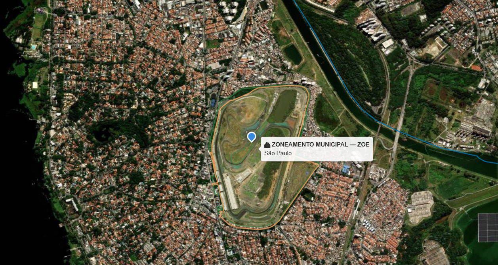

Os dados são públicos.
Juntá-los ainda é trabalho manual.
Para saber o que incide sobre um único endereço, um consultor abre vários portais, cada um com seu formato, sua projeção e sua data. Depois monta o relatório à mão, print por print.
Um relatório, muitos portais
- Abrir cada portal e localizar o imóvel de novo em cada um GeoSampaDataGEOSICARCETESBIBAMACONDEPHAATIPHAN
- Baixar camadas em formatos diferentes e converter projeções
- Sobrepor tudo num SIG e conferir se nada ficou de fora
- Tirar prints, copiar atributos e anotar fonte e data de cada base
- Montar o documento no editor de texto e revisar
Horas de trabalho técnico por endereço, repetidas a cada novo caso.
Uma consulta, todas as camadas
- As bases já estão coletadas, padronizadas e datadas
- O ponto ou a área é cruzado com todas as camadas de uma vez
- Cada ocorrência vem com fonte, data e base legal
- O que não foi encontrado também aparece, camada por camada
O tempo do profissional vai para a análise, não para a coleta.
Na coleta manual, uma base que ninguém lembrou de abrir simplesmente não entra no relatório.
Um arquivo baixado meses atrás pode não refletir o mapa vigente.
Dois técnicos, ou o mesmo técnico em dias diferentes, podem chegar a conclusões distintas.
Do dado bruto à leitura do território
Cálculo determinístico: a mesma consulta, sobre as mesmas bases, produz sempre o mesmo resultado. Nada é inferido.
Coleta
Bases oficiais obtidas na fonte, com versão e data registradas.
Padronização
Geometrias corrigidas e convertidas para um único sistema de referência.
Cruzamento
Sobreposição espacial de todas as camadas sobre o ponto ou a área consultada.
Leitura
O que cada camada mostra, o que não mostra e qual a base legal.
A plataforma da EnvRisk para consulta territorial
O Locus consulta e cruza informações territoriais de fontes públicas oficiais e apresenta, de forma integrada, as ocorrências encontradas para uma localização analisada.
O Locus não atribui pesos, scores ou classificações de risco às ocorrências identificadas. Seu papel é organizar e apresentar evidências territoriais, preservando a rastreabilidade até as fontes utilizadas.
O Locus identifica ocorrências territoriais. O profissional interpreta suas implicações.

Só dados públicos e oficiais
Trabalhamos com as bases que o próprio poder público mantém. Qualquer resultado pode ser conferido na origem.
Listamos o órgão que produz cada dado. Parte das bases chega por portais de distribuição, como o DataGEO e o GeoSampa. Cada base tem cobertura, escala e data próprias, e por isso registramos o metadado de cada camada junto com o resultado.
Um tema por semana, às terças-feiras, com guia gratuito
Conteúdo orientativo sobre como consultar dados públicos antes de reformar, construir ou comprar um imóvel. Cada publicação traz um guia em PDF no próprio post do LinkedIn.
| Nº | Data | Tema | Situação |
|---|---|---|---|
| 01 | 06/10/2026 | Seu lote tem vegetação significativa?Como consultar a camada no GeoSampa | Publicado |
| 02 | 13/10/2026 | Antes de cortar uma árvoreO que os Termos de Compromisso Ambiental mostram | Em breve |
| 03 | 20/10/2026 | Um jardim, duas proteçõesTombamento estadual e municipal no Jardim da Luz | Em breve |
| 04 | 27/10/2026 | Reformar perto de um bem tombadoO Viaduto Santa Ifigênia e as áreas envoltórias | Em breve |
| 05 | 03/11/2026 | Os córregos que não se veemA camada de drenagem e o que passa sob o lote | Em breve |
| 06 | 10/11/2026 | Tombado não é congeladoReuso e requalificação no Sesc Pompeia | Em breve |
| 07 | 17/11/2026 | Leia o metadado antes do mapaData, escala e norma de cada camada | Em breve |
| 08 | 24/11/2026 | E-book Antes de decidirO guia completo, com checklist de consulta | Em breve |
Três regras em tudo o que publicamos
Fonte que você confere
Todo número vem de fonte pública indicada, com data. Você consegue abrir e verificar por conta própria.
Dado separado de hipótese
Dizemos o que a camada mostra. O que ela não mostra fica dito também.
Sem casos individuais
Usamos bens públicos como exemplo. Não expomos imóveis, pessoas ou empresas específicas.
Fale com a EnvRisk
Para sugerir temas para a série ou conversar sobre inteligência territorial.
- contato@envrisk.com.br
- EnvRisk no LinkedIn
- Base
- São Paulo, SP